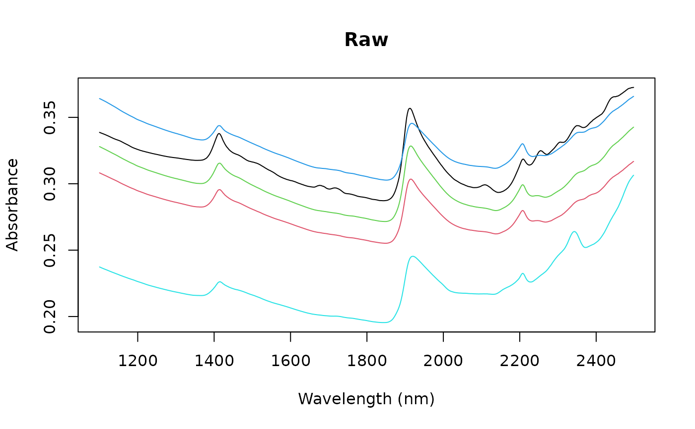
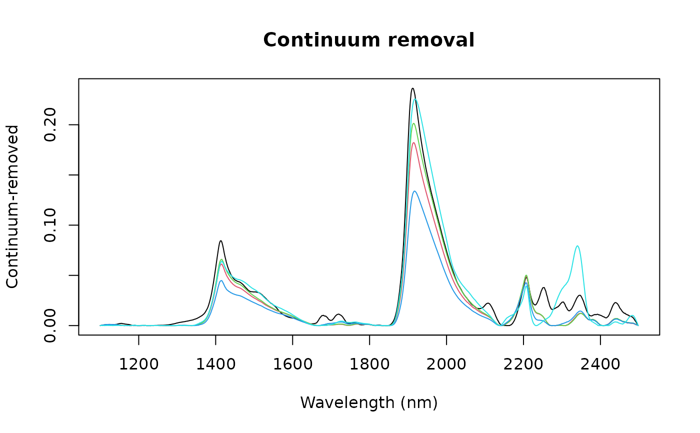

Compute the continuum-removed values of a data matrix or vector.
Arguments
- X
a numeric matrix or vector to process (optionally a data frame that can be coerced to a numerical matrix).
- wav
a numeric vector of band positions of length equal to
ncol(X)(orlength(X)ifXis a vector). If not provided, integer indices1:ncol(X)are used.- type
the type of data:
"R"for reflectance (default),"A"for absorbance.- interpol
the interpolation method between convex hull points:
"linear"(default) or"spline".- method
the normalisation method:
"division"(default) or"subtraction"(see Details).
Details
The continuum removal technique was introduced by Clark and Roush (1984) to highlight absorption features by removing the effect of the overall spectral shape (albedo). It is widely used in remote sensing and spectroscopy to isolate and compare absorption band depths across samples or sensors.
The algorithm identifies points lying on the convex hull (upper envelope) of a spectrum, connects them by linear or spline interpolation to form a continuum line, and normalises the spectrum against that line either by division or subtraction. Division (default, equivalent to the ENVI implementation) yields values in [0, 1] for reflectance spectra, where 1 indicates no absorption relative to the continuum. Subtraction yields residuals relative to the continuum (\(1 + x_i - c_i\)).
When type = "A" (absorbance), spectra are first converted to
reflectance (\(1/X\)) before computing the convex-hull continuum, and
the result is back-transformed to absorbance afterwards. This means that
for absorbance data, continuumRemoval and baseline
are not equivalent: they compute the convex hull on different
scales (reflectance vs absorbance). For reflectance data (type =
"R"), the two functions are more directly comparable, differing only in
the final normalisation step: baseline subtracts the continuum
(\(x_i - c_i\)), whereas continuumRemoval divides by it
(\(x_i / c_i\)).
At wavelengths where both the spectral value and the continuum are zero, the continuum-removed value is set to 1 (no absorption feature), since division of zero by zero is undefined.
References
Clark, R.N., and Roush, T.L., 1984. Reflectance Spectroscopy: Quantitative Analysis Techniques for Remote Sensing Applications. J. Geophys. Res. 89, 6329–6340.
See also
baseline for a closely related method that subtracts the
convex-hull envelope rather than dividing by it.
savitzkyGolay, movav,
gapDer, binning
Author
Antoine Stevens & Leonardo Ramirez-Lopez
Examples
data(NIRsoil)
wav <- as.numeric(colnames(NIRsoil$spc))
cr <- continuumRemoval(NIRsoil$spc, wav, type = "A")
matplot(wav, t(NIRsoil$spc[1:5, ]),
type = "l", lty = 1,
xlab = "Wavelength (nm)", ylab = "Absorbance",
main = "Raw"
)

matplot(wav, t(cr[1:5, ]),
type = "l", lty = 1,
xlab = "Wavelength (nm)", ylab = "Continuum-removed",
main = "Continuum removal"
)
